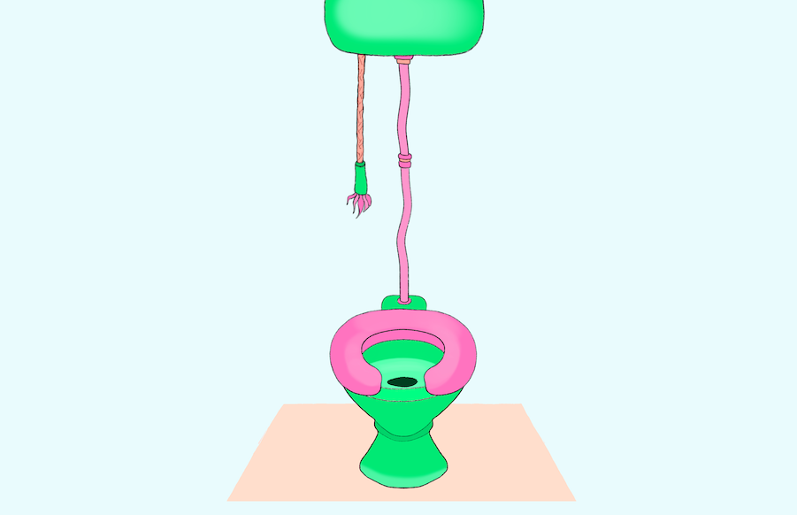

<!--
todo
move shrunk drawings to tiles
does this work on mobile?
integrate text
get cool fonts
make a sound on click
make an animation on click

how to handle clicks??? IF mouse on tile & canvas open -> save drawing, IF mouse on tile and canvas closed -> open canvas, ELSE if canvas open & mouse on canvas -> draw, ELSE if mouse on clickable object -> sound and animate

-->


<!DOCTYPE html>
<html>
<head>
  <meta charset="UTF-8">
	<title>Throne Room</title>

	<script language="javascript" type="text/javascript" src="https://cdn.jsdelivr.net/npm/p5@1.0.0/lib/p5.min.js"></script>
	<!-- <script language="javascript" type="text/javascript" src="https://cdn.jsdelivr.net/npm/p5@0.5.6/lib/p5.min.js"></script> -->
	<!-- <script language="javascript" type="text/javascript" src="https://cdn.jsdelivr.net/npm/p5@0.5.6/lib/addons/p5.dom.min.js"></script> -->

  <script type="text/javascript" src="https://www.gstatic.com/firebasejs/3.6.3/firebase.js"></script>
	<script language="javascript" type="text/javascript" src="js/sketch.js"></script>

</head>

<body>
	<!-- HAVE THE CANVAS PLACED IN A PARTICULAR DIV -->
  <div id ="canvascontainer"></div>
  <!-- <button id="saveButton">save</button> -->
  <!-- <button id="clearButton">clear</button> -->
  <!-- <p>
		<label for="words"></label>
		<input type="text" id="words" name="words" required
       minlength="1" maxlength="40" size="10">

  </p> -->

  <!-- </img> -->

		<!-- ORDERED LIST -->
    <ol id="drawinglist"></ol>
</body>
</html>
